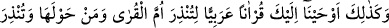
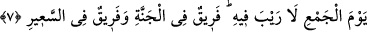

“–Maiyet ve velâyetin altında Sehl b. Abdulah diye sâlih bir adam var. Şâyet bu adam
senin şifa bulman için Allah’a yalvarırsa Allah bu zâtın duâsını kabul eder” dediler.
Sultan bu zâtı huzura çağırdı ve kendisi için Allah’a duâ etmesini istedi. Bu sâlih kişi
ise:
“–Senin yönetiminde haksız olarak hapsedilmiş nice insanlar varken Allah benim
senin hakkındaki duâmı nasıl kabul eder?” dedi.
Sultan haksız olarak zindana attırmış olduğu insanları tahliye edip serbest bıraktı.
Bunun üzerine Sehl:
“–Allahım! Bu adama isyanın zilletini gösterdiğin gibi tâatin izzetini de göster ve
mübtela olduğu bu hastalıktan onu kurtar” diye duâ etti. Sultan şifa bulup sağlığına
kavuştu.
Sultan, Sehl b. Abdullah’a bu iyiliği karşılığında bir miktar mal teklif ettiyse de Sehl
bunu kabul etmedi. Sehl’e yanındakiler “malı alıp fakir fukaraya verseydin” dediler.
Sehl sahradaki çakıl taşlarına şöyle bir baktı, birden o çakıl taşları kıymetli
mücevherler oluverdi. Sonra da:
“–Allah’ın böyle lutfuna mazhar olan insan hiç Yakub b. Leys’in malına muhtaç olur
mu?” dedi. Evet, işte veren, mâni olan, zarar veren, fayda veren hep, kendisinden başka
ilah bulunmayan gerçek dost ve vekil olan Allah’tır.
Şâir der ki:
Nakşeden O’dur, benim nakkâşım da O’dur.
Bu konuda başka kim iddiâ sahibiyse o zulmü arayandır (zâlimdir).
7. Şehirlerin anası (olan Mekke’de) ve onun çevresinde bulunanları uyarman ve
(vukuunda) asla şüphe olmayan toplanma günüyle onları korkutman için, sana
böyle Arapça bir Kur’an vahyettik. (İnsanların) bir bölümü cennette, bir bölümü
de çılgın alevli cehennemdedir.
“Şehirlerin anası (olan Mekke’de) ve onun çevresinde” civârında “bulunanları
uyarman”; inkârda ısrar ettikleri takdirde “(vukuunda) asla şüphe olmayan toplanma
günüyle onları”, Mekkelileri, Mekke’de olan Arapları ve Mekke ehlinin çevresinde
olanları kıyâmet günüyle ve orada vuku bulacak Allah’ın azâbıyla “korkutman için” -ki
o günün vukuunda hiç şüphe olmayıp o gün mutlaka gelecektir- “sana böyle” açık ve
anlaşılır tarzda “Arapça bir Kur’ân vahyettik. (İnsanların o gün,) bir bölümü
cennette, bir bölümü de çılgın alevli cehennemdedir.” Yani o gün tüm müminler ve
kâfirler yaptıklarının karşılığını görecektir.